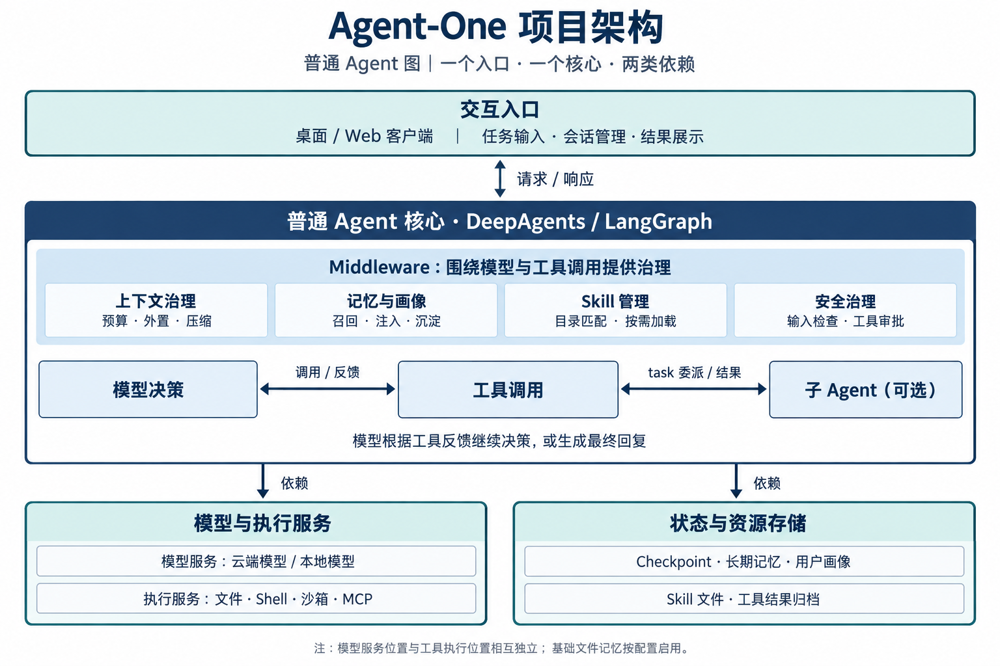
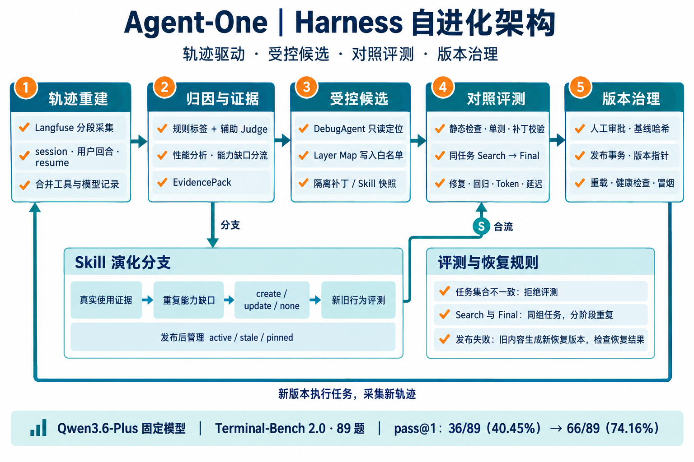

项目背景与我的工作
Agent-One 是面向 AIPC 的端云协同可执行 Agent 系统，让用户通过自然语言完成资料检索、文件分析、报告生成和终端操作。产品以“端侧优先、云端增强”为方向；模型配置选择本地或云端推理服务，工具后端决定操作的实际执行位置。
我在项目启动阶段参与普通 Agent 图的建设，基于 DeepAgents Middleware 实现上下文、记忆、Skill、输入安全与子 Agent 协作；随后负责 Harness / Skill 自进化和 Qwen3.5-4B 后训练。
产品规划以 PC 为主要执行端，手机用于审批与通知，NAS 用于私有存储与归档。下文围绕我参与的普通图运行链路、负责的系统演化与模型训练展开。
问题与方法设计
| 问题 | 方法 |
|---|---|
| 长任务上下文增长、会话状态丢失 | Checkpoint、工具结果外置、部分压缩与工作集恢复 |
| 历史经验与任务方法难复用 | 结构化记忆、用户画像、Skill 渐进式加载 |
| 模型操作涉及真实权限 | 输入守卫、工具路径策略与人工审批 |
| 失败难归因，修复引入回归 | 任务轨迹重建、EvidencePack、受控补丁与版本评测 |
| 4B 模型工具决策不足 | 可执行环境、组相对策略优化与反馈增强蒸馏 |
三条工作链路
系统侧固定任务模型比较 Harness 版本，模型侧固定 Harness 比较后训练模型，分别评价两类变化。
| 工作 | 输入 → 输出 | 个人职责 |
|---|---|---|
| 普通 Agent 构建 | 用户请求 → 模型与工具循环 → 产物与轨迹 | 参与 Middleware 与协作能力实现 |
| Harness / Skill 自进化 | 轨迹 → 归因 → 候选 → 对照评测 → 版本发布 | 负责归因、候选控制、评测与版本流程 |
| 端侧候选模型后训练 | 成功轨迹 / 可执行任务 → SFT 对照 / GRPO+OPD → 统一评测 | 负责数据、环境、训练接入与模型比较 |
一、普通 Agent 构建

1. 会话接入与图装配
前端通过 LangGraph SDK 发起请求，user_id 标识归属，thread_id 关联会话，assistant_id 选择普通 agent。后端确定工作目录与运行配置，经 build_chat_agent、create_cli_agent 装配模型、工具、中间件与子 Agent，再编译可执行图。
2. Checkpoint 恢复与模型—工具循环
AsyncSqliteSaver 使用 sessions.db 保存图状态，配置包含 cr-sqlite 扩展处理。模型返回 AIMessage；含 tool_calls 时分派真实工具，反馈以 tool_call_id 关联为 ToolMessage，再进入下一次决策。最终通过读取、解析或任务测试核验产物后交付。
| 中间件位置 | 具体作用 |
|---|---|
| 回合开始前 | 输入检查、Skill 元数据准备、上下文诊断 |
| 模型调用外侧 | 模型选择、画像和记忆注入、Skill 目录组织 |
| 工具调用外侧 | 策略判定、审批和实际执行 |
| 最终回答后 | tool_calls 为空时异步写入长期记忆 |
| 异步回合结束后 | 检查预算并部分压缩历史 |
3. 工具结果外置与历史压缩
TokenStateMiddleware 记录用量，按当前模型窗口重算预算：警告与自动压缩 70%，严重提示 80%，阻塞预算 95%。超过 5,000 字符的工具结果保存全文，仅保留前 1,000 字符与路径引用；按 tool_call_id 复用存储位置。
AutoCompactionMiddleware 在异步 aafter_agent 中触发 partial 压缩，先应用已有摘要事件，再按 preserve_count=6 和工具消息配对要求切分历史，生成九段式摘要并归档。摘要事件保存 cutoff_index、summary_message、file_path。文件缓存通过摘要签名识别新压缩，按次补入近期文件片段；健康诊断写入图状态。
4. 记忆开关、画像与相关召回
Web 提供“进阶记忆”开关：开启高级记忆，关闭时同时关闭基础与高级记忆。AGENTS.md 由基础文件记忆配置分支提供；画像中间件独立读取 PERSONA.md、SYSTEM.md、USER.md，将非空内容注入本次系统消息。
结构化记忆按 user_id 管理存储服务，以最近用户文本查询。查询向量复用于主题和记录检索，Qdrant 候选按 0.7×向量分 + 0.3×词项重合排序；默认 10 个主题候选取 4 个，每主题最多 4 条 SEMANTIC 记录，再补最多 4 条 RAW 观察，去重并控制在约 1,200 Token。最终回答且 tool_calls 为空时，将用户与助手文本交给后台 ingest_turn，并安排画像刷新。
5. Skill 渐进式加载
依内置、用户级、项目级目录扫描 SKILL.md，解析 YAML 名称、描述与路径，同名按项目级优先。skills_metadata 缓存目录，并按启用状态过滤；初始仅注入元数据，模型命中后通过 read_file 读取正文，再按需加载脚本和参考资源，操作沿统一工具策略执行。
6. 输入安全与工具审批
输入守卫在回合开始前规范化、分词并匹配词表，命中后返回拒绝消息并跳转结束。PolicyHookMiddleware 按工具、参数、路径和工作目录判定允许、阻止或审查，需审批时 interrupt，用户决策后恢复。普通策略、Shell 白名单和 gateway-docker 安全链按后端条件装配。
启用本地 Shell 时使用 LocalShellBackend，关闭 Shell 时使用 FilesystemBackend，沙箱模式使用指定后端。CompositeBackend 按路径前缀分流普通工作文件、工具结果与历史归档。
7. 子 Agent 独立执行与结果回传
SubAgentMiddleware 将已注册子 Agent 暴露为 task 工具。主 Agent 提供 subagent_type 和 description，子任务以独立 HumanMessage 开始；构造子状态时过滤主 messages、todos、skills_metadata 等字段。子 Agent 使用自己的模型、工具和中间件，最终消息回传为 ToolMessage，允许合并的状态通过 Command 更新主状态。
二、Harness 自进化

1. 重建完整任务轨迹
按时间窗口分页读取 Langfuse Trace 与 observations，利用重叠窗口补齐延迟 Span。按 session 和时间排序，新用户回合创建任务组，resume 片段并入原任务；合并并去重模型调用、工具结果、审批记录与产物证据。
usage 缺失等进入可观测性队列，正常审批进入控制流记录，可操作业务失败进入 DebugAgent 输入。任务事实包括用户要求、最终输出、工具参数与反馈、Token、耗时和 Harness 版本。
2. 规则归因与 EvidencePack
确定性规则识别缺少写入、路径错误、缺少校验、工具结果缺失、权限拒绝和超时等信号。模型 Span、工具 Span 与墙钟时间分别统计，定位上下文开销、重复调用或执行瓶颈。EvidencePack 保存任务标识、原始引用、故障标签、指标和发现。
成功对照按任务词与工具集合重合选择；辅助 Judge 判断 Harness 缺口，高置信问题按组件和信号分组，形成修复假设、验收用例与回归用例。
| 生命周期层 | 干预对象 |
|---|---|
| 环境与交付约定 | 输出要求、目标路径、完成标准 |
| 任务方法与技能 | 可复用任务方法 |
| 动作落地 | 参数、工具接口和执行适配 |
| 轨迹调节 | 重复重试、预算和终止控制 |
3. Layer Map 限制 DebugAgent 修改
Layer Map 将责任层映射到组件和写入白名单。DebugAgent 只使用 grep_repo、read_file 检查工具，限制读取边界和返回长度，最终输出统一 diff。默认自动通过范围为不超过 5 个文件、新增 180 行、删除 60 行，并包含聚焦测试；更大改动进入人工复核或拒绝。
候选 diff 与 metadata 单独保存，通过 git apply --check 检查可应用性，格式失败可进行一次受约束修复。人工审查后应用，再执行聚焦单测和任务回放。
4. 隔离候选并装配运行资源
配置版本包含 contract、middleware、skills 和 manifest。sitecustomize 包装 Agent 构建入口，按 active_version 加载资源；baseline 不额外注入。源码 diff 与运行资源版本分别管理。候选从父快照创建，在 allowed_globs 范围内修改，检查路径逃逸，记录 base_hash、content_hash 和证据后原子落盘。
动作中间件检查必需参数、Shell 阻断项与别名反馈；轨迹中间件按工具名及排序参数统计重复调用，默认重复阈值 3、连续错误阈值 4，在 before_agent 检查并注入恢复提示。
5. 同条件对照与回归门禁
基线与候选固定任务、模型、权限、预算、环境和评分规则，通过 HARNESS_ROOT 加载对应快照。任务 ID 集合或分母不一致时拒绝评测，实际模型不符时标记失败。Runner 保存版本哈希、输出、退出码、Token 和延迟，Grader 独立评价产物及任务结果。
逐任务比较 F→P、P→F、P→P、F→F，要求目标修复、无目标回归、其他回归满足上限且净修复为正，并检查成本增幅。Search 通过后在同一组用例上按 Final 配置重复确认，通过后标记 eligible。
6. 发布、重载与失败恢复
正式发布检查资格、审批和父版本哈希，获取锁并记录事务后切换 Active Pointer。调用实际 Reload、Health、Smoke，保存结果。失败时用旧内容创建递增恢复版本，再切换、重载和核验健康状态，保留失败发布与恢复的审计链。
Skill 演化分支
1. 确认真正使用过的 Skill
显式 metadata、用户激活、读取 SKILL.md、专用工具调用的证据分值分别为 1.00、0.98、0.95、0.90；仅上下文出现路径为 0.35。阈值 0.8 筛选可信使用关联。
2. 聚合重复能力缺口
将长轨迹压为有长度和步骤限制的 JudgePacket，判断失败类型与 Skill 缺口，过滤临时外部故障，按 Skill、失败类型或规范化原因构造分组键；达到最小样本数后触发演化。
3. 只读分析与候选生成
有限步分析调用列表、正文、轨迹和使用统计工具；轨迹查询使用文本包含匹配。输出 create、update 或 none，更新记录 base_hash，新建使用未占用名称，证据与正文写入候选区域。
4. 行为评测与生命周期治理
隔离新旧 Skill 快照执行同任务比较，检查改善、回归和置信度。发布前复核哈希，更新后重载与冒烟，失败则创建恢复版本。Curator 记录调用、成功率和最近使用时间，管理 active/stale 并保护 pinned；默认人工发布，自动发布仅覆盖通过行为评测的单个已有 Skill 更新。
三、端侧候选模型后训练
SFT 对照：Qwen3.5-4B Base → 491 条成功轨迹 → LoRA SFT → 独立评测
RL 主链：Qwen3.5-4B Base → 343 道 SWE-Gym 任务 → GRPO → GRPO + OPD
评测：固定 Harness 与任务预算，比较四个阶段模型1. 清洗成功轨迹并训练 SFT 对照
筛选 491 条 OpenHands 成功轨迹，统一角色、补充 Observation 标识、去空消息；最多保留前 96 条消息，单条超过 12,000 字符保留首尾。规范化消息用 SHA-256 去重并保存来源信息。训练仅监督 Assistant 输出，用户与环境消息提供上下文。
| SFT 配置 | 最终值 |
|---|---|
| LoRA | rank=16、alpha=32、dropout=0.05、target=all |
| 学习率 / epoch | 1e-5 / 3 |
| batch / 梯度累积 | 1 / 8 |
| 长度 / 模板 | 16,384 / qwen3 |
2. 创建可执行任务环境
读取 SWE-Gym 问题、repo、base_commit、test_patch、FAIL_TO_PASS 和 PASS_TO_PASS，构建 343 道任务清单。准备缺陷版本并补齐测试，每条 Rollout 复制独立工作目录，记录 setup、命令和 verifier 结果。Shell 在会话目录执行，反馈 exit_code、stdout、stderr、timed_out，超时退出码为 124。
3. 同题 G=4 采样并整理 Token 字段
同一题逐条执行四条轨迹，模型生成终端命令，环境执行后作为 Observation 回传；无效动作反馈格式要求，提前结束与轮数耗尽由环境处理，结束后执行独立 verifier。Atropos managed server 保存训练节点，从中整理 ScoredDataGroup。
| 字段 | 用途 |
|---|---|
| tokens / masks | 模型序列与训练位置 |
| scores | 同组奖励 |
| inference_logprobs | 采样旧策略的 Token 概率 |
| group_overrides | 任务 ID 等追踪信息 |
| distill_token_ids / distill_logprobs | OPD 稀疏 Teacher 分布 |
4. Verifier-First Reward
FAIL_TO_PASS 与 PASS_TO_PASS 验证成功且无超时，直接奖励 1.0；失败轨迹才计算有限过程奖励：编辑后测试进度最多 0.45，测试 0.05，查看 0.03，343 任务配置编辑加分 0.08、无编辑惩罚 0.12；无效动作、超时和最终失败扣分，范围裁剪至 [−0.5,1.0]。
5. GRPO 策略更新
从 Base 启动 RL，Trainer 对同题奖励减均值、除标准差生成优势。当前概率与 inference_logprobs 形成比率，按 ε=0.2 裁剪；冻结 Base 提供 K3 参考 KL，系数 0.01。仅更新 LoRA，rank=8、alpha=16、学习率 5e-7。
6. 反馈增强 OPD
从 Student 轨迹提取最后一段 Assistant 响应及紧随的状态。Judge 生成并门控 Hint，有效提示仅加入 Teacher 上下文；无效时蒸馏目标置空，保留 RL。冻结 Qwen3.5-4B Teacher 对 Student 已生成 Token 做 teacher forcing，验证词表映射并按因果位置取分布。
Teacher 先做全词表 log_softmax，再取 Top-50 ID 和 logprob，回填到 Student 最后连续可训练片段。其余词的概率合为 Tail，计算 KL(Student ∥ Teacher)，只对有效位置平均。温度 1.0，联合损失为：
7. 权重同步、合并与评测
Atropos API 协调数据，Rollout Server 生成动作，SWE-Gym Env 执行和评分，Trainer 计算损失更新 LoRA。采用 lora_only 权重桥接，每个训练步同步采样服务。保存 Adapter 与匹配底座、Tokenizer 和参数，合并部署后固定 Harness、工具协议、预算与 verifier 评测。
两组独立实验结果
Terminal-Bench 2.0 共 89 道任务，包含 4 Easy、55 Medium、30 Hard。整体 pass@1 按通过任务总数除以 89 计算。
系统侧：固定 Qwen3.6-Plus，比较 Harness
| 版本 | 通过任务 | pass@1 |
|---|---|---|
| 进化前 | 36/89 | 40.45% |
| 进化后 | 66/89 | 74.16% |
净增 30 道任务，提升 33.71 个百分点。
模型侧：固定 Harness，比较 Qwen3.5-4B
| 阶段 | 通过任务 | pass@1 |
|---|---|---|
| Base | 10/89 | 11.24% |
| SFT 独立对照 | 9/89 | 10.11% |
| GRPO | 11/89 | 12.36% |
| GRPO + OPD | 13/89 | 14.61% |
GRPO 较 Base 净增 1 题，加入 OPD 后再净增 2 题，最终提升 3.37 个百分点。SFT 对照在该评测中低于 Base。
局限与后续方向
后训练任务集中于单仓库，当前 89 题结果需要通过更多仓库、多随机种子与逐任务回归进一步验证。过程奖励中的编辑识别和测试进度来自文本规则，后续可使用文件 diff 与结构化测试结果提高可靠性。
训练环境采用独立工作目录与宿主 Shell，进一步运行不可信任务时需加强进程权限、网络和资源隔离。OPD 目前集中于最后一段响应，Hint 质量和 Top-50 尾部合并会影响监督效果，可进一步比较多轮位置选择与不同 K 值。